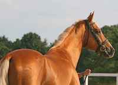

The Akyel (in Iradi: "white wind") is slender, aristocratic riding horse with long legs, long elegant neck and fine head. The most famous feature of the Akyel is the iridescent metallic coat, which we call doran. On the sun the golden Akyel is shining like metal. It is not a photo trick!The Akyel is descending from the legendary "heavenly horses" of ancient Dayuan (the Fergana valley). The Chinese Emperor Wu sent his armies for these horses in the War of the Heavenly Horses in 104 BC. Today these same horses are living in our valleys.
Use: riding, endurance races, parades, show.
Colours: golden (most prized), palomino, bay, chestnut, cream.
Height: 150-162 cm.
Character: intelligent, proud, connected to one owner.
2. CHONGTOR - the Mountain Horse
 The Chongtor is short, stocky, deep-chested mountain horse. It has rock-hard hooves and can tolerate the temperature until minus 30 degrees. Herders of Irad use the Chongtor for the seasonal migration to the summer pastures, and it is the best horse for the national game ulak tartysh.
The Chongtor is short, stocky, deep-chested mountain horse. It has rock-hard hooves and can tolerate the temperature until minus 30 degrees. Herders of Irad use the Chongtor for the seasonal migration to the summer pastures, and it is the best horse for the national game ulak tartysh.
Use: mountain work, trekking, ulak tartysh, pack transport.
Height: 132-142 cm.
Character: brave, patient, very hardy.
The Syndicate supplies the Chongtor horses to ulak teams of Irad and to clients abroad who need strong horse for mountain conditions.